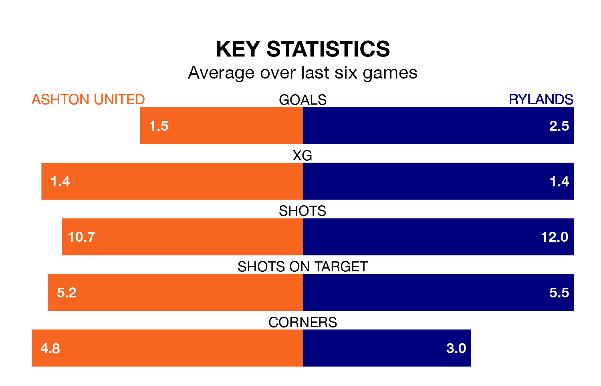

Rylands travel to Hurst Cross for Saturday's match against Ashton United looking to bounce back from defeat last time out in Northern Premier League.
Rylands, who sit second in the league after 23 games, fell to a 3-2 home defeat to Macclesfield on Monday.
They face an Ashton side who secured a draw in their last match, a 2-2 tie with Hyde United, and who sit ninth in the table.
With 39 goals in 23 games so far this season, Rylands are scoring at the league's average rate with 1.7 goals per game. And they are conceding fewer than average, letting in 24 goals at a rate of 1.0 per game.
Ashton are also average scorers, with 1.7 goals per game. They have also conceded 1.7 goals per game.
United are in mixed form in Northern Premier League, with two wins and two draws from their last six games.
With two wins and three draws over that period, the visitors' form is slightly better – they have taken nine points from 18, compared to the home side's eight.
Updated: 12:57, 02/01/24